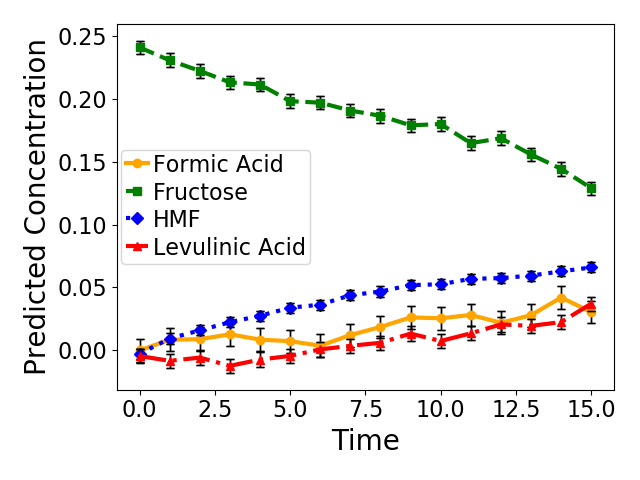

Note
Click here to download the full example code
Predicting mixture concentration with pquad¶
This example shows how to plot predictions from the model
The parity plot for the mixtures where concentrations are known is shown in figure 1 and the plot of concentration with time for the experimental spectra from reacting systems are shown in figure 2 and 3 for different starting concentrations
from pquad import IR_Results
from pquad import get_defaults
from pquad.plotting_tools import set_figure_settings
Loading data¶
First, we’ll get the default data and load it into pquad. It automatically fits the model to the data in pure_data_path
frequency_range, pure_data_path, mixture_data_path, reaction_data_path = get_defaults()
deconv = IR_Results(4, frequency_range, pure_data_path)
deconv.set_mixture_data(mixture_data_path)
deconv_reaction = IR_Results(4, frequency_range, pure_data_path)
deconv_reaction.set_mixture_data(reaction_data_path, contains_concentrations=False)
Set figure settings¶
figure_folder='fit'
set_figure_settings('presentation')
Plot parity plot¶
Make parity plot with the 95% prediction intervals
deconv.plot_parity_plot(figure_folder)
Out:
R2 of mixed prediction: 0.9848041280249827
RMSE of mixed prediction: 0.019192974474399493
Max Error mixed prediction: 0.04810819524389309
C:\Users\lansf\Box Sync\Synced_Files\Coding\Python\Github\pQUAD\pquad\pquad.py:714: UserWarning: Matplotlib is currently using agg, which is a non-GUI backend, so cannot show the figure.
plt.show()
Plot reaction plots¶
Make reaction plots with the 95% prediction intervals
deconv_reaction.get_reaction_figures(figure_folder)
- 

Out:
C:\Users\lansf\Box Sync\Synced_Files\Coding\Python\Github\pQUAD\pquad\pquad.py:506: UserWarning: Matplotlib is currently using agg, which is a non-GUI backend, so cannot show the figure.
plt.show()
C:\Users\lansf\Box Sync\Synced_Files\Coding\Python\Github\pQUAD\pquad\pquad.py:506: UserWarning: Matplotlib is currently using agg, which is a non-GUI backend, so cannot show the figure.
plt.show()
Total running time of the script: ( 0 minutes 0.804 seconds)